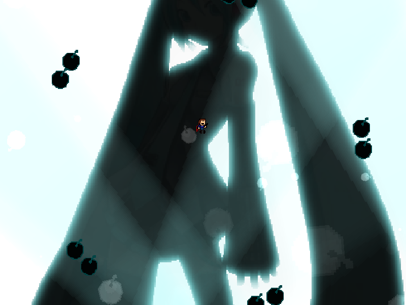
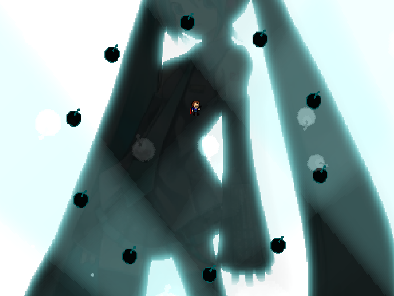
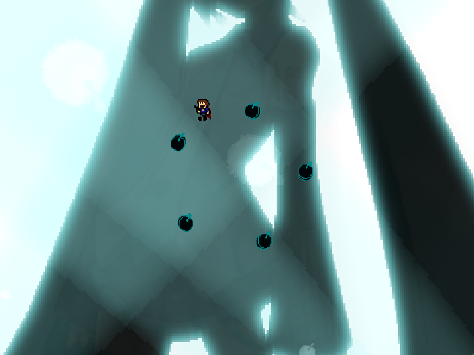
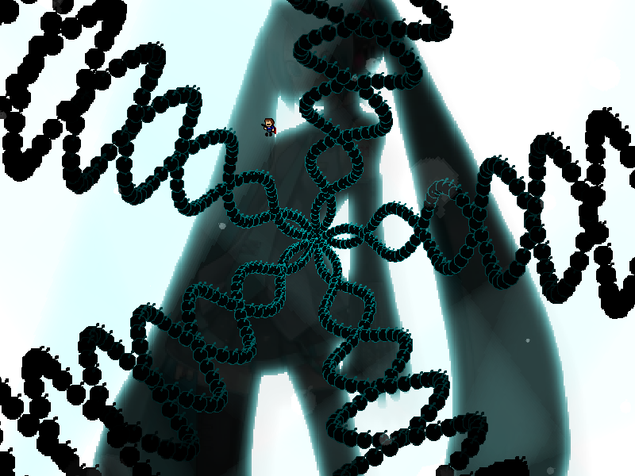

chapter12 - section2

| creator | segment | label | jump |
|---|---|---|---|
| NN | 2:54.60~2:59.30 | R | infinite |
反復型の弾幕です。
画面中央を中心として画面外から周期的に生成される5方向に広がる2つの円形弾幕に関して、これらは角度についてそれぞれ互い違いの方向に18°の振幅で振動しています（fig.12-2.1.a~fig.12-2.1.c）。
したがって、これらの円形弾幕は角度に関してそれぞれ値をとり得ない領域が存在します。



生成から60step経過後、円形弾幕が収束する際に通過した軌道上のそれぞれの点に向かって、画面中央から弾が生成されます（fig.12-2.2）。
これらを含めて回避するために、円形弾幕が収束段階においてとり得ない角度（常に開いた状態となっている角度）を見極める必要があります。
